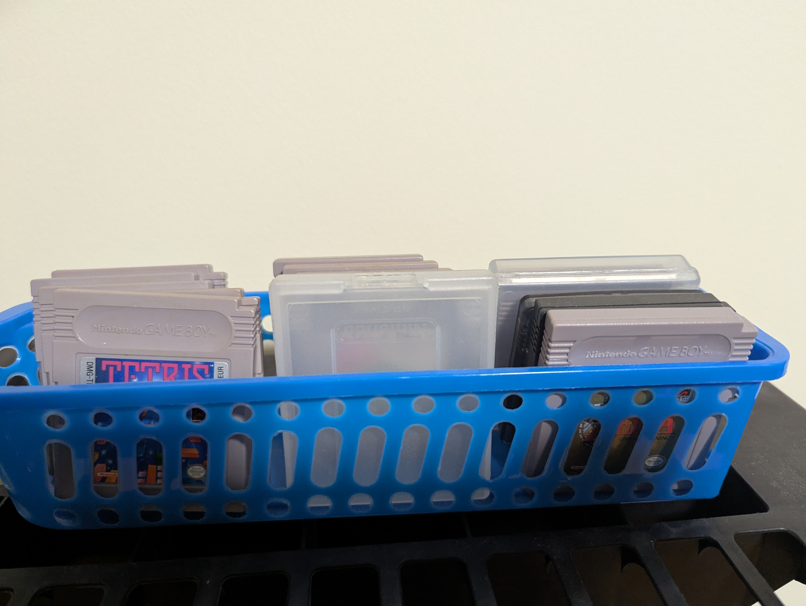

Fig. 3-1: This is the Game Boy I have. (Please ignore that weird flec at the top of the screen. I don't know what it is and I don't know how it got there.)Fig. 3-2: Here is my Game Boy Color. It can run the same games as the original Game Boy, as well as dedicated Color games.

Fig. 3-3: Here are the games I have. I believe I have 11, I didn't have enough time to count or demonstrate the Game Boy running a game. Sorry!